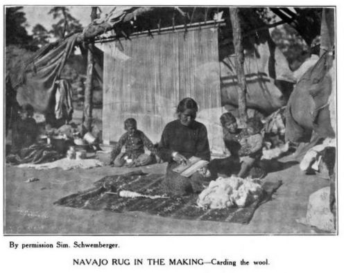
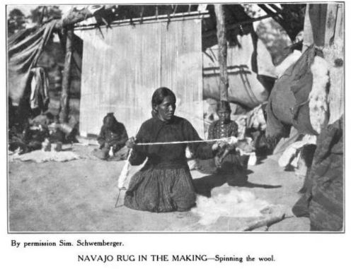
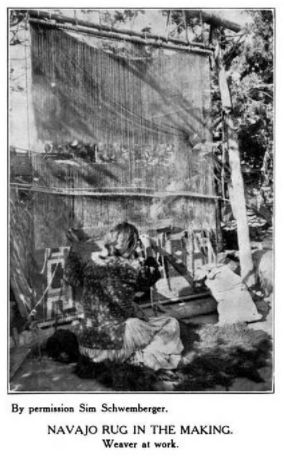
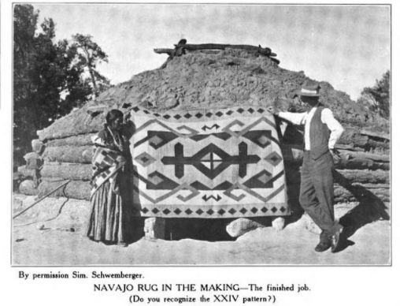
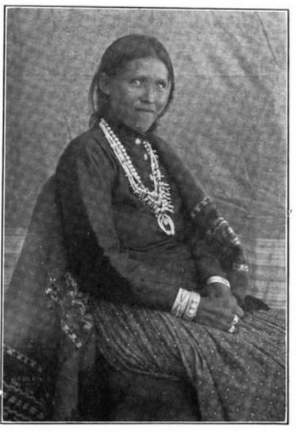

Dine´ (Navajo) weavers traced their craft to Spider Woman. Spider-woman is said to have been the first to use the loom and wool, which she consequently gave to the Dine´ to do for themselves. Centuries later, weavers felt the process of weaving not only connected them to their ancestors, but to deities. This creation was important and deeply personal. That did not hinder some elements crucial to the weaving process, like dyes and yarn, from evolving to accommodate the demand for rugs for American clients through trader middle-men. By end of the 19th century, Dine´ women weavers felt their craft could be both spiritual and profitable in the US marketplace.“Pray to it and talk to it,’that is what my mother says to me… I hear her praying in the morning to her loom.” Mary J. Barker, Wide Ruins, Arizona
There was a divide between how traders understood their relationship with weavers and how they portrayed them in catalogs. Traders often featured profiles of Navajo weavers in their catalogs to emphasize that the blankets they produced were handmade. As commercial rug manufacturing challenged the trader’s monopoly on the market for rugs, traders worked to disrupt the market for machine-made goods by touting the “primitive” nature of both rugs and weavers. Traders that the handmade goods made by weavers were unique. While traders emphasized that the goods Navajo weavers made were unique, they often cast the weavers themselves as fitting the broad stereotype of passive actors in the marketplace. Yet, the actions of weavers reveal that were savvy about the market and conscious of traders’ various tactics of exploitation and underpayment. Evidence illustrates that they demanded respect and fair treatment. This came in the form of acknowledging unfair sales, but also, in refusal to produce specific designs. There was a variety of ways weavers attempted to accommodate the demands for their textiles. Some chose to use the designs while others did not. (See Bsumek, 42 for letter from Louisa Alcott to Lorenzo Hubbell Jr.).“ I usually talk to the people I sell my rug to; make sure it’s going to a good home and they’re going to take care of it. I guess it’s like a baby- you put all that work into it, take care of its problems- you want someone who is going to appreciate it”
Lenora Davis, Ganado, Arizona
The popularity of trader catalogs, where consumers could select preferred patterns before purchase, occupied a very distinct moment in American history. This occurred against the backdrop of an expanding consumerist society, immediate access to ethnic products, the reemergence of the Southwest in defining American cultural identity, and the willingness of women weavers to transition from the creation of solely cultural outerwear to a broader consuming public wanting to purchase rugs and carpets. (See lesson plan on teaching the market revolution). While it might sound familiar to an audience with Amazon prime and large retail stores, this was a revolutionary moment.
How did the cultural legacy of Navajo weaving become another product to be consumed?




Traders felt even this spiritual element of the weaving process could be commodified and used to contest the mass production of inexpensive textiles. Traders would sell quality and personality to justify pricing. The men who traded Navajo women’s creations highlighted the individuality of each rug and each weaver in their widely distributed catalogs. J. B. Moore, for example, was known to include names and portraits of each weaver with the final product. In the photos above, it is clear traders emphasized the importance of the loom by photographing individual weavers in front of it. While the weavers appear small in the photograph, their products loom large in the marketplace.

One such weaver was “Bi-leen Al-pai-Bi-zha-ahd” (right) whose name was spelled out syllabically in order for the owner of the blanket to be able to properly pronounce her name. According to Moore, she specialized in rugs that mirrored Oriental ones yet she never duplicated a design and was “the Navajo weaver who set the standard of excellence at once the admiration and despair of all other weavers”. Seeing that traders often attempted to persuade weavers to incorporate designs and motifs they felt held greater value in the market (see J.B. Moore's catalog). The catalogs, however, neglected the personhood of the weaver and her resistance. By coupling this narrative with other images of Dine´ women sitting at the base of their looms (above) Moore strips the Bileen Alpai Bizhaahd’s motivations for weaving, ownership of the textile, and creativity from the narrative, replacing them with what she represents: an antique, a far removed memory of the underdeveloped Southwest. Moore’s catalog exchanges her refusal to weave his designs into her creations, with an individuality suitable for the capitalistic consumers that laid the groundwork for the catalogs in the first place.
“They used to pass out the papers and say: ‘you weave one like this.’... Grandmother that passed away, she never did copy one. She didn’t want the paper. She used to say: ‘I’ll weave my own pattern’.”
Mikes Daughter Frank, Jedito, Arizona
It is also important to discuss the mutually beneficial, if not entirely fair, relationship between Navajo people and traders living among them. To conclude the catalog, Moore writes:
“Our first thought of course is to get them to weaver for us and for us only, all the fine rugs they possibly can, and then find a buyer for these. But it is also our mission to buy any and everything the Navajo has to sell...any and everything he has which he wants to turn to cash...And it is also our purpose to sell him in turn, all his supplies, groceries, dried goods, clothing...everything in fact that he has need for and the money to buy with.”The result was an imbalance of power and unequal dependence of Navajo on the trader. Women were aware of this, often in letters and in person, calling attention to the exploitative nature of the relationship, and expecting more.
The early practice of weaving was very much linked to cultural ceremonies and practicality- the need for warm outerwear produced a shoulder blanket for colder days, a saddle blanket to be placed on the backs of horses, and the like. Rarely were they used as rugs and carpets. (Designs and dyes were also deeply symbolic: Bedouins of the Great Southwestern Desert: Imagining a Connection between the Dine and The Orient). While traders like Moore and Hubbell often speculated as to the religious or emotional significance of designs and patterns, they were often inaccurate. Their records provide a suitable example of how to think critically about the trader archive. The best way to reflect on these narratives is to firstly decolonize the existing narrative, and secondly, return to the source of these stories: Navajo women. In an effort to do so, I would invite you to watch an interview with Sadie Curtis in 2006, told in her own language, with her own words describing her journey to weaving.
https://www.youtube.com/watch?v=Hscu4nLFUQw
– – – – – –
Related Reading
- Marsha Weisiger. Dreaming of Sheep in Navajo Country. (2011).
- Rosa Belle Holt. Rugs, Oriental and Occidental, Antique & Modern: a Handbook for Ready Reference. (A.C. McClurg & co., Chicago: 1908.)
- Philip Deloria. Playing Indian.
- Bsumek, Erika Marie. Indian-made: Navajo Culture in the Marketplace, 1868-1940. (University Of Kansas, 2012.)